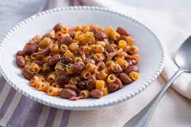

Bean Soup With Pasta

Description
This nourishing dish is easy and quick to make. It is a perfect option for a gloomy and rainy day,
and it is perfect for vegeterians and vegans!
The main ingredients are beans and pasta. You can choose whatever kind of beans you like,
in this recipe borlotti beans will be used.
As for the pasta choose the shape that you like the most, but I higly reccomend using short pasta like Penne and not noodles.
If you are not vegan add a little bit of parmesan cheese on top!
Ingredients
- Celery
- Carrot
- Onion
- Olive oil
- Tomato paste
- Beans
- Water
- Pasta
- Salt
- Pepper
Steps
- Mince the celery, carrot and onion;
- Add the olive oil in a pot and add the minced vegetables. Let it cook for five minutes, stting occasionally;
- Add the tomato paste and let it cook for 3 more minutes;
- Put the cooked beans in the pot, stir everything and add salt and pepper to taste;
- Add water, cover the pot until it comes to a boil and let it cook for at least ten minutes;
- After the ten minutes add the pasta;
- When the pasta is cooked, turn off the stove and let it sit for a few minutes;
- Drizzle a little bit of olive oil an Parmesan cheese on top and done!